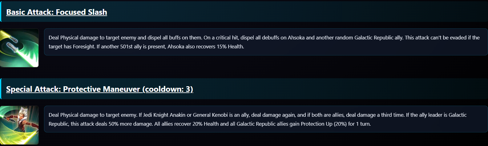

Explication complète d’une page d’unité
1. Présentation générale
Chaque page d’unité du projet SWGOH Wiki est une fiche détaillée présentant un personnage ou un vaisseau du jeu Star Wars: Galaxy of Heroes. Ces pages sont entièrement construites en HTML, CSS et JavaScript, et peuvent être traduites dynamiquement en français ou en anglais.
L’objectif principal est d’offrir une expérience utilisateur claire et immersive : visuel de l’unité, affichage des capacités, description détaillée, et liens vers les factions et catégories correspondantes.
2. Structure HTML détaillée
Chaque page suit une structure fixe et réutilisable, divisée en plusieurs blocs fonctionnels :
- En-tête : nom du personnage, image principale, rôle et factions.
- Bloc de présentation : résumé des caractéristiques de base.
- Bloc des capacités : liste complète des attaques et aptitudes.
- Footer : scripts JavaScript et boutons de navigation.
Exemple de structure simplifiée :
<div class="container">
<header>
<h1 id="title">Ahsoka Tano (Snips)</h1>
<img src="image/ahsoka.png" alt="Ahsoka Tano">
</header>
<section id="description">
Versatile Attacker who constantly assists allies...
</section>
<section class="abilities">
<h2>Capacités</h2>
<div class="ability" id="basic">...</div>
<div class="ability" id="special">...</div>
</section>
</div>

En-tête de l'unité Ahsoka Tano (Snips) avec éléments textes comme son Nom et une description de l'unité suivi d'un système de navigation contenue dans une balise <nav></nav> qui contient l'ensemble des factions de l'unité et qui permet de rédiriger l'utilisateur vers les pages de factions associés
Voici en exemple le code de l'ensemble de la balise Nav pour l'unité Ahsoka Tano (Snips) :
<nav class="perso" style="font-size: 20px;">
<a class="capacite" style="color:blue !important" href="../classement-perso/coté-lumineux.html" id="lightSide">Light Side</a>
<a class="class" href="../classement-perso/attaquant.html" id="attacker">Attacker</a>
<a class="capacite" href="../classement-perso/chef.html" id="leader">Leader</a>
<a class="capacite" href="../classement-perso/501E.html" id="501e">501ST</a>
<a class="capacite" href="../classement-perso/république-galactique.html" id="Galactic-Republic">Galactic Republic</a>
<a class="capacite" href="../classement-perso/jedi.html" id="jedi">Jedi</a>
<a class="pilote" href="../classement-perso/membres-équipages.html" id="crew-members">Crew Members</a>
</nav>
Explication du fonctionnement :
La balise <nav> sert à créer un bloc de navigation spécifique pour l’unité.
Chaque lien <a> représente une catégorie ou un attribut de l’unité, permettant à
l’utilisateur de naviguer vers les pages correspondantes :
- Light Side : indique l’alignement de l’unité et redirige vers la page du côté lumineux. Page coté lumineux
- Attacker : indique le rôle de l’unité (ici attaquant) et redirige vers la page des attaquants.
- Leader : si l’unité peut être chef d’équipe, le lien mène vers la page des chefs.
- 501ST : indique une affiliation spéciale (faction), redirige vers la page correspondante.
- Galactic Republic : faction principale de l’unité, lien vers la page de la République Galactique.
- Jedi : classe ou catégorie de l’unité, ici Jedi.
- Crew Members : si l’unité peut piloter ou faire partie d’un équipage, lien vers la page des membres d’équipage.
Chaque lien utilise un id unique, ce qui permet au JavaScript de changer le texte ou la
langue dynamiquement.
Les classes (capacite, class, pilote) servent à appliquer des
styles CSS différents selon le type de lien.
3. Présentation des capacités
Chaque capacité est affichée dans une carte visuelle composée de :
- Un titre avec le type de compétence (Basique, Spéciale, Chef, Unique).
- Une icône d’attaque (souvent issue du jeu original).
- Une description bilingue détaillant les effets et synergies.
Exemple d’un bloc de capacité :
<div class="ability">
<h4>Basic Attack: Focused Slash</h4>
<img src="image/ahsoka_basic.png" alt="Attaque de base">
<p>En anglais : Deal Physical damage to target enemy and dispel all buffs on them. On a critical hit, dispel all debuffs on Ahsoka and another random Galactic Republic ally. This attack can't be evaded if the target has Foresight. If another 501st ally is present, Ahsoka also recovers 15% Health.</p>
</div>
En français : Inflige des dégâts physiques à une cible ennemie et dissipe toutes ses améliorations. En cas de coup critique, dissipe tous les affaiblissements sur Ahsoka et un autre allié aléatoire de la République Galactique. Cette attaque ne peut pas être esquivée si la cible dispose de prévoyance. Si un autre allié de la 501E est présent, Ahsoka récupère 15% de santé.
4. Lecture et intégration des données JSON
Les pages d’unités sont générées à partir des fichiers units.json (pour les personnages) et
ships.json (pour les vaisseaux).
Chaque entrée du fichier contient toutes les informations nécessaires :
{
"id": "ahsoka_tano",
"name_fr": "Ahsoka Tano",
"name_en": "Ahsoka Tano",
"faction": ["Jedi", "République"],
"role": "Attaquant",
"alignment": "Lumière",
"image": "ahsoka.png",
"abilities": {
"basic": "Inflige des dégâts physiques...",
"special": "Augmente la vitesse des alliés Jedi..."
}
}
Ce système permet d’ajouter de nouvelles unités simplement en modifiant le fichier JSON — aucune mise à jour du code HTML n’est nécessaire.
5. Système de traduction FR / EN
La traduction des pages est gérée par un script JavaScript commun à toutes les unités.
Il stocke la langue choisie dans le sessionStorage et remplace dynamiquement le texte des
balises
identifiées par un id.
Exemple de code :
const translationsFr = {
"title": "Ahsoka Tano (Snips)",
"description": "Attaquante Jedi agile et rapide...",
"basic": "Inflige des dégâts physiques à la cible..."
};
function setLanguage(lang) {
sessionStorage.setItem('lang', lang);
const t = lang === 'fr' ? translationsFr : translationsEn;
for (const id in t) {
document.getElementById(id).textContent = t[id];
}
}
6. Scripts JavaScript et interactivité
En plus de la traduction, le JavaScript gère :
- Le changement de thème (clair/sombre) si activé sur d’autres pages.
- Les animations d’apparition (fade-in des blocs au défilement).
- Le retour automatique en haut avec un bouton animé.
// Exemple : animation à l'apparition
const elements = document.querySelectorAll('.section');
window.addEventListener('scroll', () => {
elements.forEach(el => {
if (el.getBoundingClientRect().top < window.innerHeight - 100) {
el.classList.add('visible');
}
});
});
7. Design, mise en page et responsive
L’ensemble du design repose sur un style visuel inspiré de Star Wars :
- Dégradé de fond galactique (bleu nuit à bleu profond).
- Texte clair et doré pour rappeler les interfaces Jedi/Sith.
- Ombres portées pour donner du relief aux images et cartes.
Grâce à Bootstrap 5 et au responsive design, toutes les pages sont adaptatives : les blocs se réorganisent automatiquement selon la taille de l’écran (colonne sur mobile, grille sur PC).
8. Accessibilité et optimisation
Chaque image contient un alt descriptif pour les lecteurs d’écran.
Les contrastes de couleurs respectent les normes WCAG pour garantir une lecture agréable sur fond
sombre.
Les performances sont optimisées grâce à :
- Un chargement différé des images via l’attribut
loading="lazy". - Une minimisation du JavaScript utilisé.
- Un caching local du fichier JSON pour accélérer les rechargements.
9. Conclusion
La page d’unité du projet SWGOH Wiki combine un design immersif, un affichage dynamique et une architecture de données flexible. Chaque fiche est conçue pour être :
- Évolutive (nouvelles unités faciles à ajouter),
- Multilingue (FR / EN en un clic),
- Responsive (adaptée à tous les écrans),
- Thématiquement cohérente avec l’univers Star Wars.
Ce modèle peut servir de base à d’autres projets interactifs de type base de données, wiki ou encyclopédie dynamique.